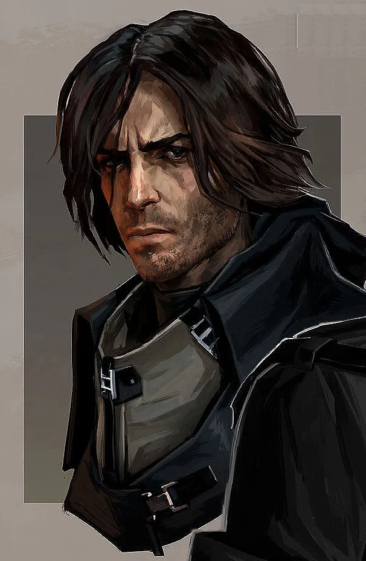
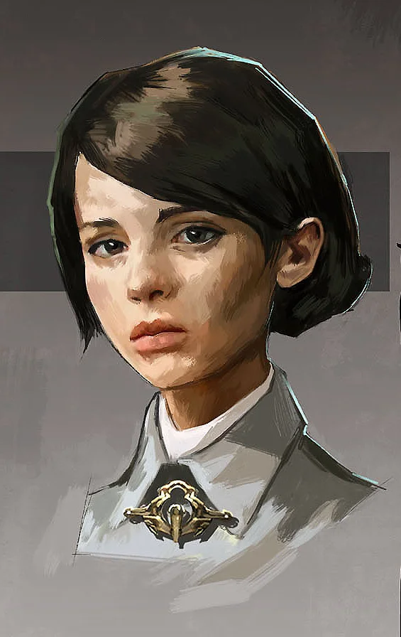
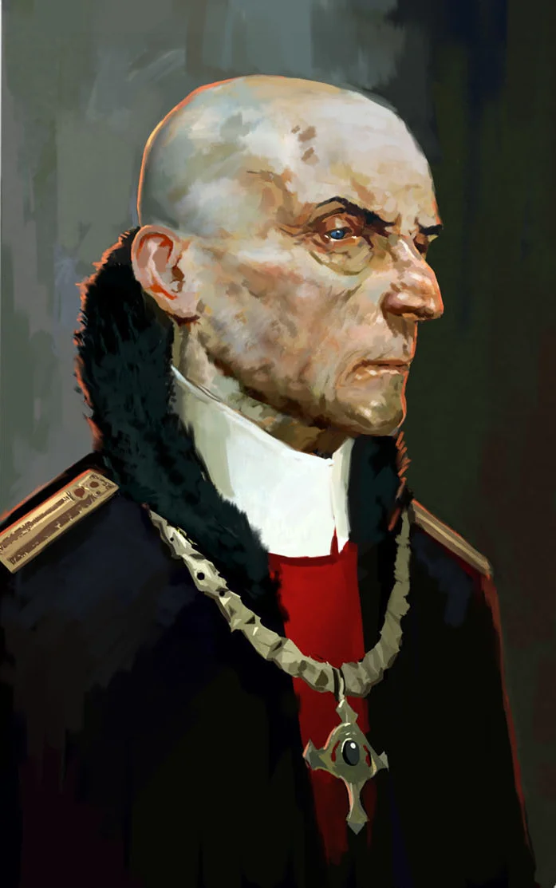
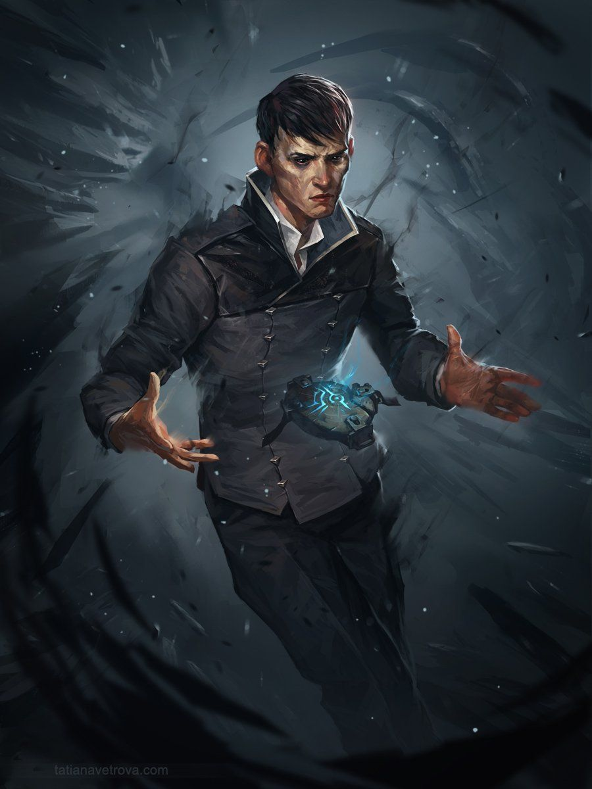
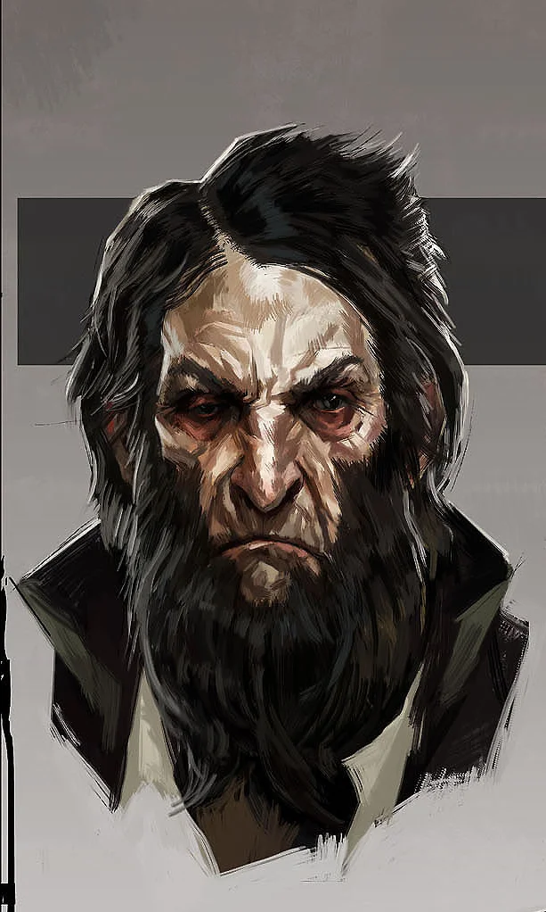

| ID | Personaje | Edad | Facción |
|---|---|---|---|
| 1 | Corvo Attano | 39 años | Imperio Kaldwin |
| 2 | Emily Kaldwin | 10 años | Imperio Kaldwin |
| 3 | Hiram Burrows | Avanzada edad | Imperio Burrows |
| 4 | El forastero | Desconocida | Sin afiliación |
| 5 | Anton Sokolov | Mediana edad | Imperio Burrows, posteriormente al Imperio Kaldwin |